Getting Started with Peripheral Building Blocks
Getting Started with Central Building Blocks
BLE Transparent UART --> BLE Multilink Transparent UART
Introduction
This document will help users create a multirole multilink device and send/receive characters between connected BLE devices over Microchip proprietary Transparent UART Profile. The multilink central will enable users to connect multiple peripheral devices to a central device. The multilink central device will act as peripheral device and will be connected to an another central device(MBD application). The central is MBD application and peripheral devices in this tutorial are WBZ451 devices.
Users of this document can choose to just run the precompiled Application Example hex file on the WBZ451 Curiosity board and experience the demo or can go through the steps involved in developing this Application from scratch.
Recommended Reads
Hardware Required
| Tool | Qty |
|---|---|
| WBZ451 Curiosity Board | 3 (min) |
| Micro USB cable | 3 |
SDK Setup
Software
- 1. TeraTerm
Smartphone App
- 1. Light Blue
Programming the precompiled hex file or Application Example
Programming the hex file using MPLABX IPE
- 1. Precompiled Hex file is located in "<Harmony Content Path>\wireless_apps_pic32cxbz2_wbz45\apps\ble\building_blocks\multirole\multilink\hex" folder
- 2. Follow the steps mentioned here
Caution: Users should choose the correct Device and Tool information
Programming the Application using MPLABX IDE
- 1. Follow steps mentioned in of Running a Precompiled Example document
- 2. Open and program the Application Example "mr_ml_trp_uart.x" located in "<Harmony Content Path>\wireless_apps_pic32cxbz2_wbz45\apps\ble\building_blocks\multirole\multilink\firmware" using MPLABX IDE
<Harmony Content Path> how to find what is my Harmony Content Path
Demo Description
Upon programming the demo application, multirole multilink device (WBZ451) will start scanning for near by peripheral devices to connect. After a connection has been made data can be sent back and forth over UART between the two devices that are connected. The multirole multilink device continues scanning until 100 secs and allows new peripheral devices that are advertising to join. For this example we are going to demonstrate 2 BLE links
Central Device → MultiRole MultiLink Device → Peripheral Device1 & Peripheral Device2 & Peripheral Device3
Demo will print start of the scanning "Scanning",connected "Connected!" and disconnected "Disconnected" state on a terminal emulator like TeraTerm@ (Speed: 115200, Data: 8-bit, Parity: none, stop bits: 1 bit, Flow control: none) Application Data to be sent to the connected peripheral device should be entered in the terminal emulator.
Testing
Users should use 3 WBZ451 Curiosity boards.
Note For demo testing with multiple links, users need to configure the BLE Device Address for the 3 peripheral devices as follows Device 1 will have PUBLIC address of {0xA1, 0xA2, 0xA3, 0xA4, 0xA5, 0xA6}
Device 2 will have PUBLIC address of {0xB1, 0xB2, 0xB3, 0xB4, 0xB5, 0xB6}
Device 3 will have PUBLIC address of {0xC1, 0xC2, 0xC3, 0xC4, 0xC5, 0xC6}
Precompiled Hex files for peripheral devices with different addresses as mentioned above are available here
Demo Experience when using 4 WBZ451 Curiosity boards 3 configured as Peripheral and 1 configured as MultiRole device This section assumes that a user has already programmed the peripheral_trp_uart application on 3 WBZ451 Curiosity Boards.
Board1 = WBZ451 Curiosity Board with mr_ml_trp_uart applicaton Programmed Board2(Device1) = WBZ451 Curiosity Board with peripheral_trp_uart application Programmed Board3(Device2) = WBZ451 Curiosity Board with peripheral_trp_uart application Programmed Board4(Device3) = WBZ451 Curiosity Board with peripheral_trp_uart application Programmed
Note: It is recommended to reset multirole multilink device first and then the peripheral devices one by one
- Open TeraTerm @ (Speed: 115200, Data: 8-bit, Parity: none, stop bits: 1 bit, Flow control: none).
- Reset the board. Upon reset, "Scanning" message is displayed on the TeraTerm.
- Upon finding peripheral device with public address {0xA1, 0xA2, 0xA3, 0xA4, 0xA5, 0xA6} message "Found Peer Node" will be displayed and a connection request will be initiated "Initiating connection".
- During the scan time if more devices are available which will be true in this case, multirole multilink device will keep initiating connections with the new peer nodes.
- Open TeraTerm @ (Speed: 115200, Data: 8-bit, Parity: none, stop bits: 1 bit, Flow control: none).
- Reset the board. Upon reset, "Advertising" message is displayed on the TeraTerm.
Note: Scanner is configured to scan only for 100 secs, user should ensure the peer device is advertising
After connection establishment, both the peripheral device (Board2/3/4) and multirole multilink device(Board1) will display "Connected!" message on respective terminal windows.
- Characters entered on any peripheral device's (Board2,3,4) terminal emulator will appear on central device's (Board1) terminal emulator.
- Characters entered on any central device(MBD app) terminal will appear on multirole device's (Board1) terminal emulator and also send to all peripheral devices connected.
- Characters entered on multirole multilink device terminal emulator will appear on peripheral devices emulator in a round-robin fashion without priority. For example in order to send character "a" to all peripheral devices, "aaa" needs to be entered on terminal emulator of the central device
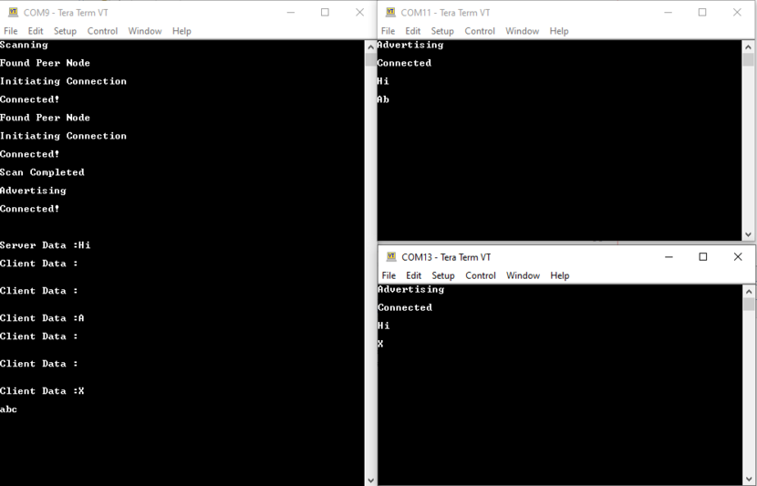
Developing this Application from scratch using MPLAB Code Configurator
This section explains the steps required by a user to develop this application example from scratch using MPLABx Code Configurator.
Tip: New users of MPLAB Code Configurator are recommended to go through the overview- 1.Create a new MCC Harmony Project -- link for instructions
- 2.Import component configuration -- This step helps users setup the basic components and configuration required to develop this application. Users should follow the instructions mentioned here to import the component configuration.
Tip: Import and Export functionality of component configuration will help users to start from a known working setup of configuration
- 3. Accept Dependencies or satisfiers, select "Yes".
- 4.Verify if the Project Graph window has all the expected configuration.
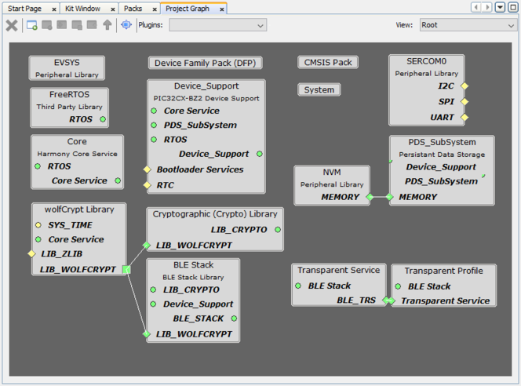
Verify Scan, Advertisement and Transparent Profile Configuration
- 1.Select BLE_Stack component in project graph.
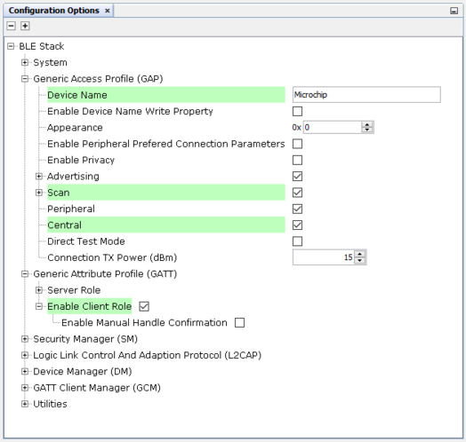
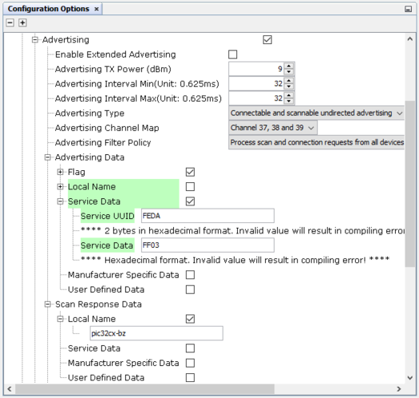Note: Advertising Interval Min and Max can be modified.
Tip: Advertisement payload can be configured by user here.
- 2.Select Transparent Profile configuration.
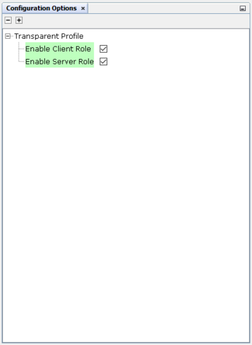
Generate Code
Instructions onhow to Generate Code
After generating the program source from MCC interface by clicking Generate Code, the BLE configuration can be found in the following project directories.
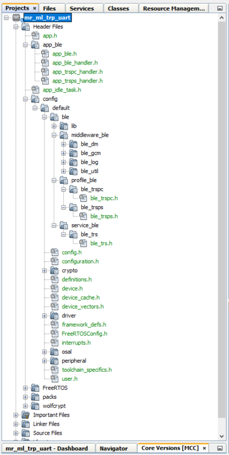
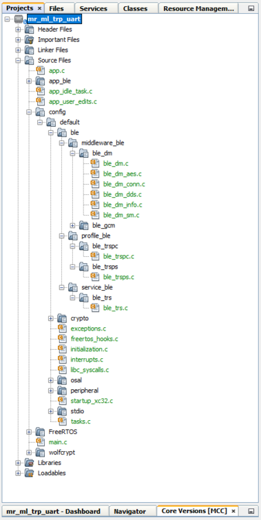
The OSAL, RF System, BLE System initialization routine executed during program initialization can be found in the project files. This initialization routine is automatically generated by the MCC.

The BLE stack initialization routine excuted during Application Initialization can be found in project files. This intitialization routine is automatically generated by the MCC. This call initializes and configures the GAP, GATT, SMP, L2CAP and BLE middleware layers.
During system sleep, clock (system PLL) will be disabled and system tick will be turned off. FreeRTOS timer needs to be componsated for the time spent in sleep. RTC timer which works in the sleep mode is used to accomplish this. RTC timer will be initialized after BLE stack initialization.
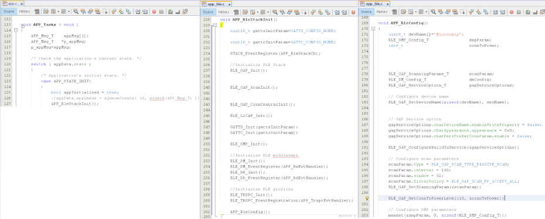
| Source Files | Usage |
|---|---|
| app.c | Application State machine, includes calls for Initialization of all BLE stack (GAP,GATT, SMP, L2CAP) related component configurations |
| app_ble.c | Source Code for the BLE stack related component configurations, code related to function calls from app.c |
| app_ble_handler.c | All GAP, GATT, SMP and L2CAP Event handlers |
| app_trspc_handler.c | All Transparent UART Client related Event handlers |
| app_trsps_handler.c | All Transparent UART Server related Event handlers |
| ble_trspc.c | All Transparent Client Functions for user application |
| ble_trsps.c | All Transparent Server Functions for user application |
Header Files
- ble_gap.h- This header file contains BLE GAP functions and is automatically included in the app.c file
- ble_trspc.h is the Header File associated with API’s and structures related to BLE Transparent Client functions for Application User
- ble_trsps.h is the Header File associated with API’s and structures related to BLE Transparent Server functions for Application User
Function Calls
- APP_BleStackInit() is the API that will be called inside the Applications Initial State -- APP_STATE_INIT in app.c
User Application Development
"ble_trspc.h" in app.c, BLE Transparent UART client related API's are available here
"ble_trsps.h" in app.c, BLE Transparent UART Server related API's are available here
"osal/osal_freertos_extend.h" in app_trsps_handler.c, OSAL related API's are available here
definitions.h in all the files where UART will be used to print debug information
- user action is required as mentioned here.
BLE_GAP_SetScanningEnable(true, BLE_GAP_SCAN_FD_ENABLE, BLE_GAP_SCAN_MODE_OBSERVER, 1000);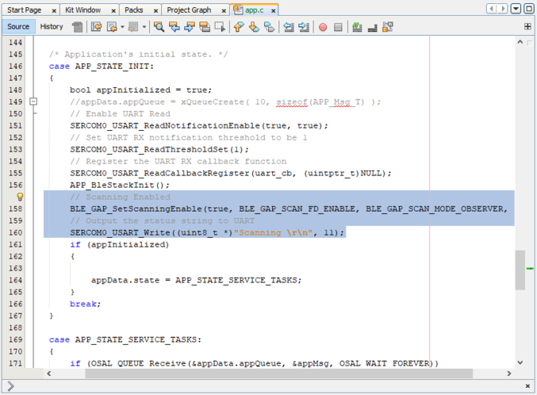
This API is called in the Applications initialstate - APP_STATE_INIT in app.c. Scan duration is 100 secs
BLE_GAP_EVT_ADV_REPORT event is generated upon finding Adverstisements on legacy channels
- BLE connection can be initiated by using the API BLE_GAP_CreateConnection(&createConnParam_t);
// code snippet to filter scan results and initiate connection // Filter Devices based of Address, for this example address checking only 2 bytes if ((p_event->eventField.evtAdvReport.addr.addr[0] == 0xA1 && p_event->eventField.evtAdvReport.addr.addr[1] == 0xA2) || (p_event->eventField.evtAdvReport.addr.addr[0] == 0xB1 && p_event->eventField.evtAdvReport.addr.addr[1] == 0xB2) || (p_event->eventField.evtAdvReport.addr.addr[0] == 0xC1 && p_event->eventField.evtAdvReport.addr.addr[1] == 0xC2)) { SERCOM0_USART_Write((uint8_t *)"Found Peer Node\r\n", 17); BLE_GAP_CreateConnParams_T createConnParam_t; createConnParam_t.scanInterval = 0x3C; // 37.5 ms createConnParam_t.scanWindow = 0x1E; // 18.75 ms createConnParam_t.filterPolicy = BLE_GAP_SCAN_FP_ACCEPT_ALL; createConnParam_t.peerAddr.addrType = p_event->eventField.evtAdvReport.addr.addrType; memcpy(createConnParam_t.peerAddr.addr, p_event->eventField.evtAdvReport.addr.addr, GAP_MAX_BD_ADDRESS_LEN); createConnParam_t.connParams.intervalMin = 0x10; createConnParam_t.connParams.intervalMax = 0x10; createConnParam_t.connParams.latency = 0; createConnParam_t.connParams.supervisionTimeout = 0x48; SERCOM0_USART_Write((uint8_t *)"Initiating Connection\r\n", 23); BLE_GAP_CreateConnection(&createConnParam_t); }
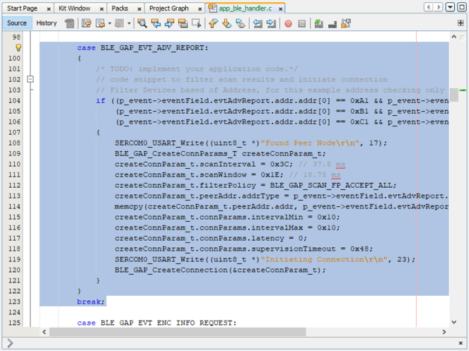
- In app_ble_handler.c BLE_GAP_EVT_CONNECTED event will be generated when a BLE connection is completed
Connection handle associated with the peer peripheral device needs to be saved for data exchange after a BLE connection
p_event->eventField.evtConnect.connHandle has this information
In Multilink Application, unique connection handler's will be generated for all the peripheral links
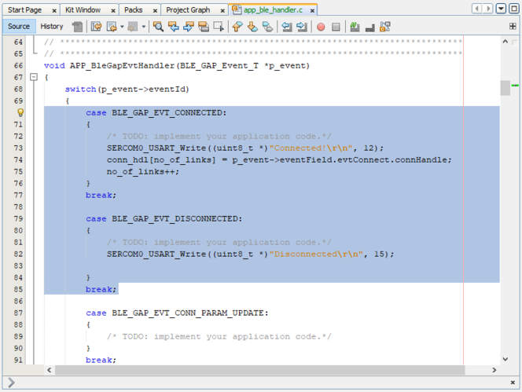
- The initiated scan operation will provide scan timeout event, we can start the advertisement to connect with another central device
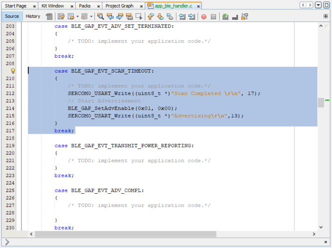
- Add "APP_MSG_UART_CB" to the generated APP_MsgId_TFigure 1. .

BLE_TRSPC_SendData(conn_hdl[i], 1, &uart_data); is the API to be used for sending data towards the Client device
BLE_TRSPS_SendData(conn_hdl[i], 1, &uart_data); is the API to be used for sending data towards the Server device
Note:* The precompiled application example uses a UART callback to initiate the data transmission upon receiving a character on UART
Example Implementation for Transmitting the received data over UART using the BLE_TRSPC_SendData APIuint16_t conn_hdl[3];// connection handle info captured @BLE_GAP_EVT_CONNECTED event uint8_t uart_data; uint8_t no_of_links;// No of connected peripheral devices uint8_t i = 0;// link index void uart_cb(SERCOM_USART_EVENT event, uintptr_t context) { APP_Msg_T appMsg; // If RX data from UART reached threshold (previously set to 1) if( event == SERCOM_USART_EVENT_READ_THRESHOLD_REACHED ) { // Read 1 byte data from UART SERCOM0_USART_Read(&uart_data, 1); appMsg.msgId = APP_MSG_UART_CB; OSAL_QUEUE_Send(&appData.appQueue, &appMsg, 0); } } void APP_UartCBHandler() { // Send the data from UART to connected device through Transparent service BLE_TRSPC_SendData(conn_hdl[i], 1, &uart_data); i++; if(i==no_of_links) i = 0; //reset link index } // Register call back when data is available on UART for Peripheral Device to send // Enable UART Read SERCOM0_USART_ReadNotificationEnable(true, true); // Set UART RX notification threshold to be 1 SERCOM0_USART_ReadThresholdSet(1); // Register the UART RX callback function SERCOM0_USART_ReadCallbackRegister(uart_cb, (uintptr_t)NULL);
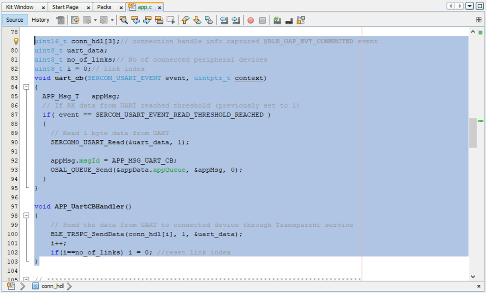
BLE_TRSPC_EVT_RECEIVE_DATA is the event generated when data is sent from central device
Users need to use the BLE_TRSPC_GetDataLength(&data_len) & BLE_TRSPS_GetDataLength(&data_len) API to extract the length of application data received
BLE_TRSPC_GetData(&conn_hdl, data); & BLE_TRSPS_GetData(&conn_hdl, data); API is used to retrieve the data, conn_hdl is the value obtained from Connection Handler section
Tip: BLE_TRSPC_Event_T p_event structure stores the information about BLE transparent UART callback functions
Tip: BLE_TRSPS_Event_T p_event structure stores the information about BLE transparent UART callback functionsExample Implementation for printing the received data from peripheral device over UART/* TODO: implement your application code.*/ uint16_t data_len; uint8_t *data; // Retrieve received data length BLE_TRSPC_GetDataLength(p_event->eventField.onReceiveData.connHandle, &data_len); // Allocate memory according to data length data = OSAL_Malloc(data_len); if(data == NULL) break; // Retrieve received data BLE_TRSPC_GetData(p_event->eventField.onReceiveData.connHandle, data); // Output received data to UART SERCOM0_USART_Write((uint8_t *)"\r\nClient Data :", 15); SERCOM0_USART_Write(data, data_len); // Free memory OSAL_Free(data);
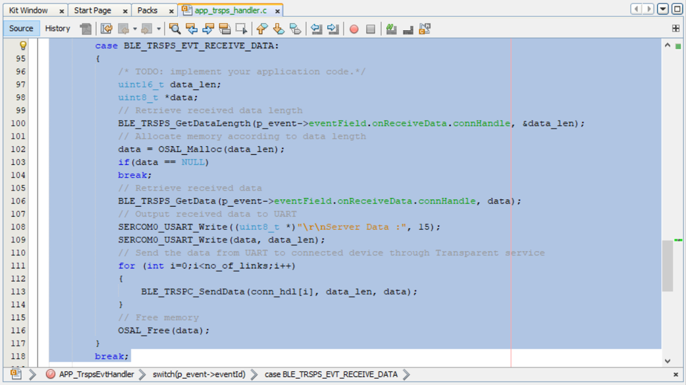
Users can exercise various other BLE functionalities by usingBLE Stack API